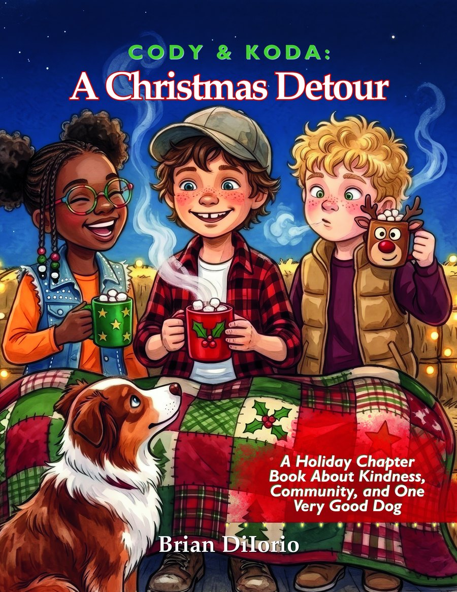

A Holiday Chapter Book About Kindness, Community, and One Very Good Dog
A Christmas Detour by Brian DiIorio is an illustrated Christmas chapter book for ages 7 to 10. A farm boy and his Australian Shepherd detour their parade float to bring light to a lonely neighbor on Christmas Eve.
The float is finished. The lights finally work. Lineup is at six sharp. So why does Koda keep pulling Cody toward the dark house down the road?
It’s two days before the Christmas Eve parade on the Briggs family farm in Texas. For the first time, Cody gets to ride the family float without the grown-ups, right beside his cousin Wyatt and his best friend Elle. Their hay-bale float glows gold from end to end, and the Best Float ribbon feels close enough to touch.
Then Koda, Cody’s Australian Shepherd, starts pulling toward the old Sanchez place. The curtains are drawn. The mail is stacked up. There’s a bent nail where a wreath should hang. Mr. Sanchez worked beside Cody’s dad for twenty years and kept a peppermint in his shirt pocket for every kid in town. Since his wife Maria died, nobody comes down his walk anymore.
With judging at six o’clock sharp, Cody has a choice to make. He can chase the ribbon, or take the long way around so one lonely neighbor doesn’t spend Christmas Eve in the dark.
Kids feel the lesson through Cody’s choices, and the grown-ups reading along usually feel it too.
Join the mailing list and you will hear the day it lands.
The paperback and hardcover include seven activity pages, including a detour maze, a word search, and a Plan Your Own Detour page.
Book 3 in the Cody & Koda series. It reads on its own, or after Cody’s Watermelon Summer and The Disappearing Act.
It is written for readers ages 7 to 10, grades 2 to 5, and it works as a read-aloud for kids of all ages.
No. Each Cody & Koda book stands on its own. Readers who have followed the series will spot a few familiar faces on the farm, but everyone is welcome to start here.
Ten short chapters, so a family can read one a night through December. The paperback and hardcover also include seven activity pages, including a detour maze, a word search, and a Plan Your Own Detour page.
On the Briggs family farm in Texas, two days before the Christmas Eve parade. There is no snow. The nights are cold and clear, and the float is covered in string lights.
Paperback, hardcover, and ebook.
A Christmas Detour is coming this November. Join the mailing list and you will hear the day it lands.
Join the mailing list for the release news, plus a welcome code for the shop.
Join the Mailing List